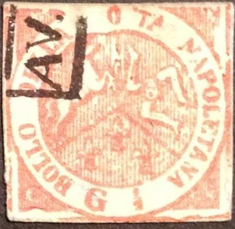
Return To Catalogue - Naples (Italy) 1858 issue
Note: on my website many of the
pictures can not be seen! They are of course present in the
catalogue;
contact me if you want to purchase the catalogue.
Examples of philatelic forgeries:
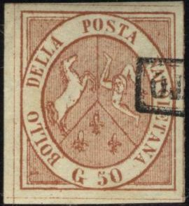


In these forgeries of the 50 G value, the "G" has a
tail. One of them has a grill cancel that can be found on
forgeries of many other countries.
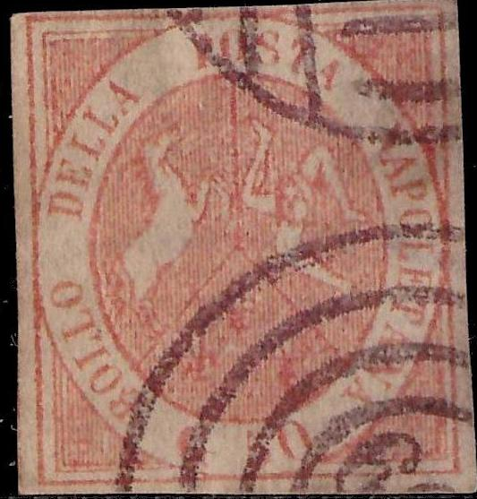
A forgery with a "909" cancel and some others with a
"8" cancel as can be found on forgeries of many other
countries (Bermuda, Chile, Cape of Good Hope, Costa Rica, Egypt,
Gold Coast, St.Vincent, Suez etc.).
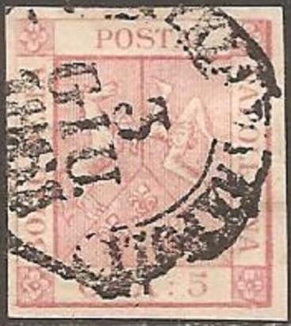


According to
http://forgeriesofitalianstates.com/Naples/Naples.htm, the above
forgeries were made by the forger Erasmus (Erasmo) Oneglia,
although I seriously doubt this is correct. It is shown there
with a concentric rings cancel. There is a dot besides the
"E" of "DELLA". The "5" is quite
different from a genuine stamp. I've seen it with two different
kinds of "ANNULANO" cancels or a rather deceptive
blurry "PARTENZA DA NAPOLI 3 GIU 1861" cancel (the same
cancel appears on a Naples blue cross forgery found in the
Fournier Album, see last image). This cancel with the same date
also appears on a Neapolitan stamp.
"annullano" cancel. I've also seen this cancel on
forgeries of Brunswick.


The horse's head and the person face are the same as in the above
5 G forgeries, I can't believe these forgeries were made by
Oneglia. I've seen this forgery type of the 10 G with a dots
cancel with "P AR" in the center. Also note the
"annullano" cancel.
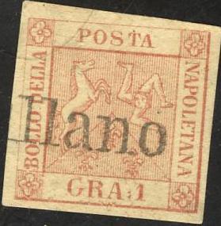


Similar forgeries with the horse's head and the person face are
the same as in the above 5 G forgeries. I've seen this forgery of
the 1 G value with a cancel consisting of 4 concentric rings.
Also a "annullano" cancel as shown above.
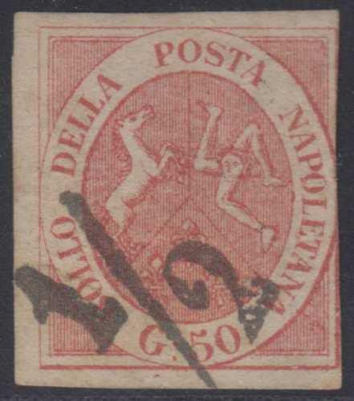


Based on the horse's head, I presume these forgeries were also
made by the same forger. Often with French numeral cancels.
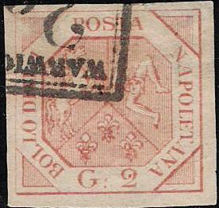

This forgery of the 2 G has the "G" too broad and the
'2' different. The first forgery has a "WARWICK" cancel
(similar design to one of the United States local stamps).
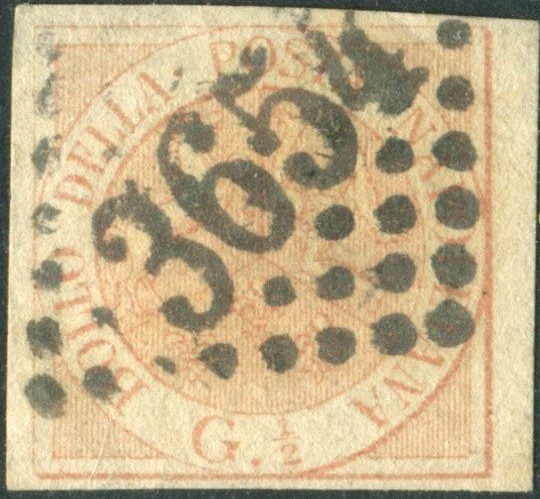


I've also seen the 1/2 g value with a cancel consisting of
concentric rings or "annullano" in a straight line. In
this forgery, the "G" is too broad. Note the
"APRES LE DEPART" cancel on one of these forgeries.
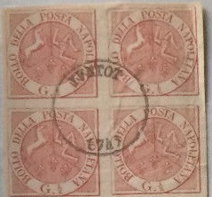
The following stamps are forgeries as well:

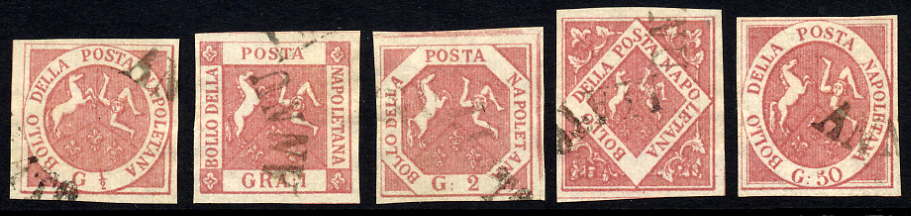
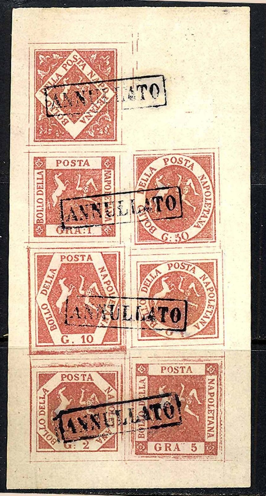
The above minisheet with all values proves that these forgeries
were indeed made by the same forger.

(Probably a forgery, note the German "BAHNPOST" or
railway cancel from ...? to Pforzheim of 1909?)

A 10 g (postal?) forgery

20 G forgery in black instead of red.
Forgeries in the wrong colour (probably an imitation of the 1860 issue? when a blue stamp with inscription "T 1/2" instead of "G 1/2" was issued); also a 50 g blue forgery:
In the following two stamps, there is a hatched border all around the stamps (I think they must be forgeries, possibly Oneglia):

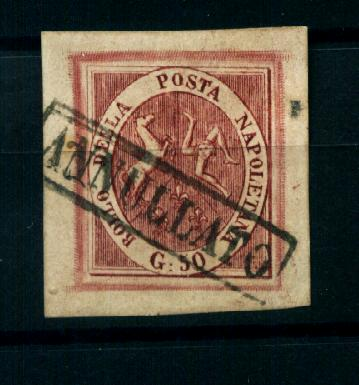


Possibly from the same source.


Engraved Oneglia forgeries; the ":" is missing.

{kind=link}
{kind=link}
{kind=link}
{kind=link}
{kind=link}
{kind=link}
{kind=link}
{kind=link}
{kind=link}
{kind=link}